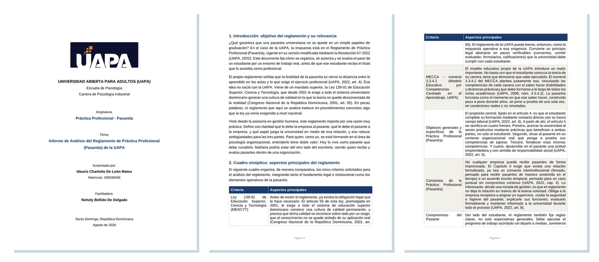

01AGOSTO 2026
Informe de Análisis del Reglamento de Práctica Profesional (Pasantía) de la UAPA
Objetivo. Analizar el reglamento que regula la pasantía: su objetivo, su base legal y sus aspectos principales, desde la mirada de la asesoría en gestión humana.

Evidencia: portada, introducción y cuadro sinóptico del informeLo que realicé
- Expliqué el objetivo del reglamento (Resolución 07-2022) y su vínculo con la Ley 139-01 de Educación Superior.
- Elaboré un cuadro sinóptico con cinco criterios: base legal, modelo MECCA, objetivos, convenios y compromisos del pasante.
- Analicé el Comité de Pasantías, la distribución de la nota (60/40) y la exoneración por experiencia profesional.
Evidencia entregada
Informe en Word de 7 páginas con portada, índice, cuadro sinóptico, conclusión, declaración de autoría y bibliografía APA.
Herramientas
Microsoft WordReglamento UAPA (Res. 07-2022)Ley 139-01Modelo MECCANormas APA